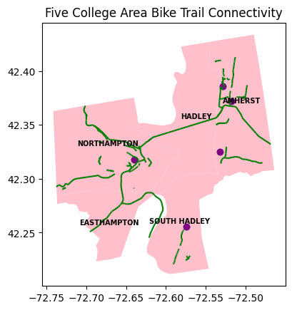
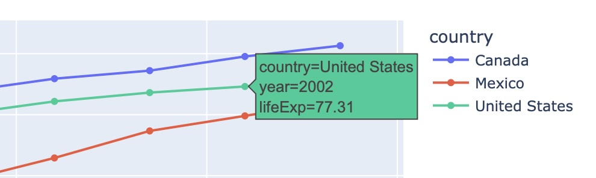
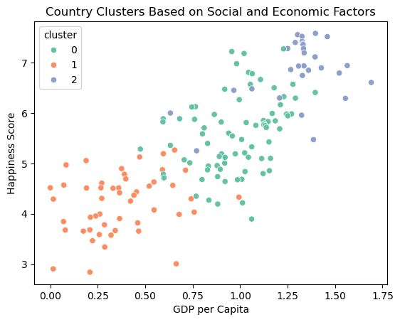
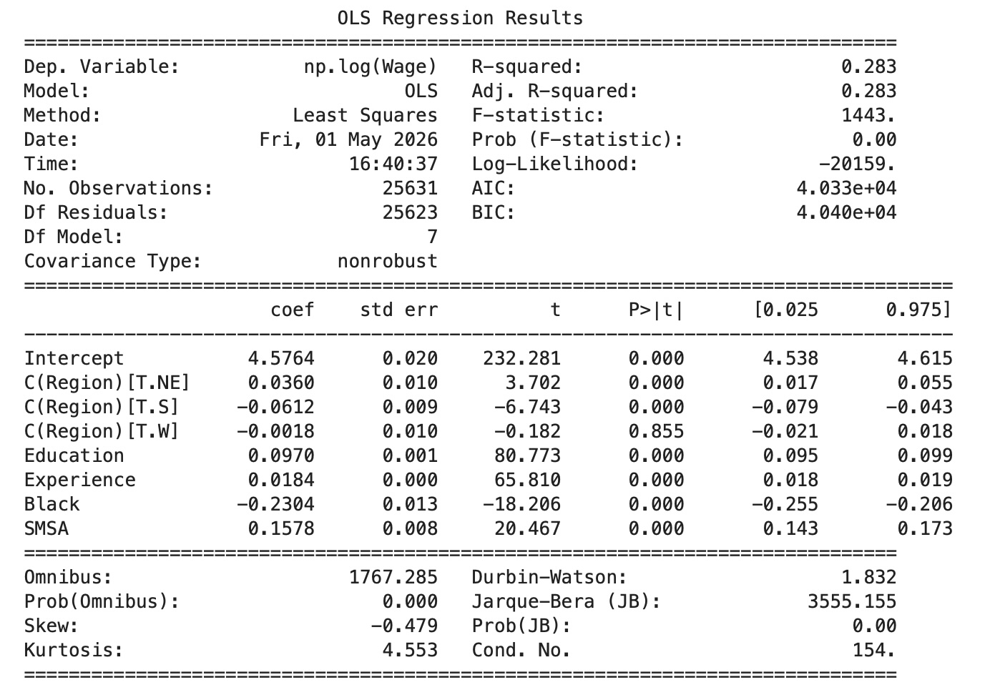

Each project below is a Jupyter notebook tutorial written by a group of students introducing a Python library through a worked example. Click a card to open the rendered notebook.

Geopandas & Folium Tutorial
A walkthrough of geopandas and folium for spatial data, using the Five College area to demonstrate basic maps, choropleths, line layers, and spatial joins.
Open notebook →
Plotly Tutorial
An introduction to Plotly Express and Graph Objects: when to use Plotly, the two core interfaces, and building interactive figures from a real dataset.
Open notebook →
Scikit-learn: Predicting Happiness
A scikit-learn tutorial that uses the World Happiness Report to predict country happiness scores from indicators like GDP, social support, health, and freedom.
Open notebook →
Statsmodels Tutorial
An introduction to statsmodels for inference and explanation, contrasted with R's stats package, applied to a wages dataset to answer concrete research questions.
Open notebook →